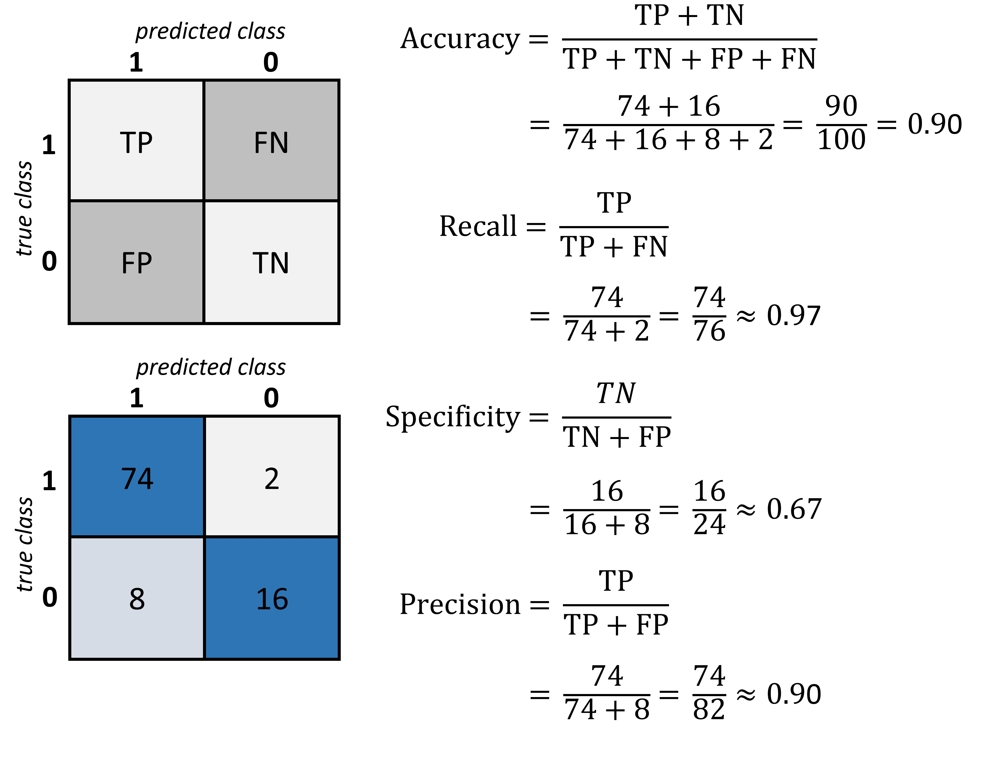
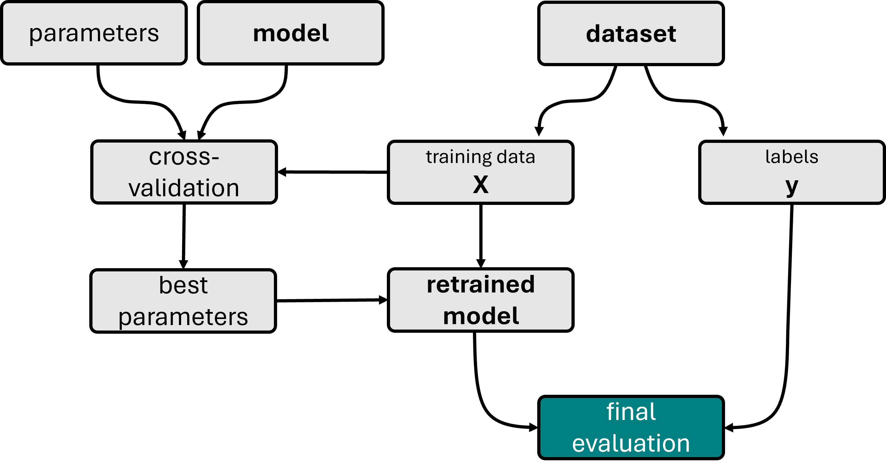
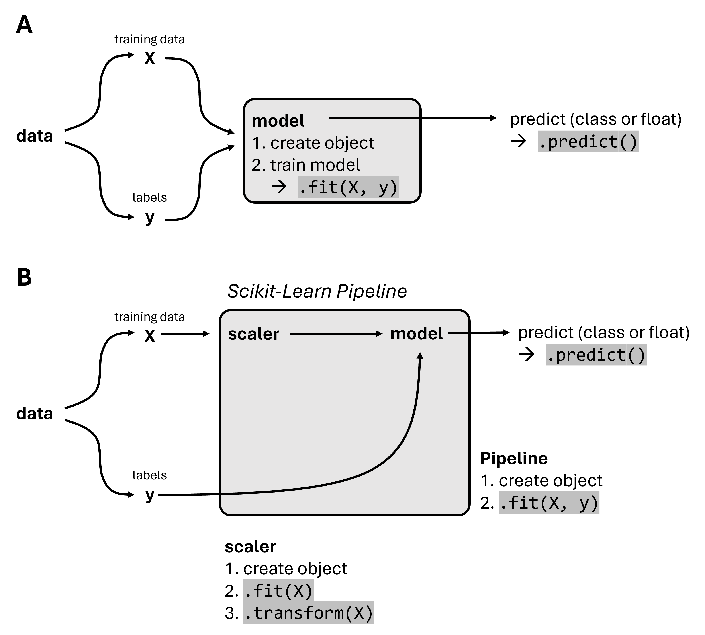
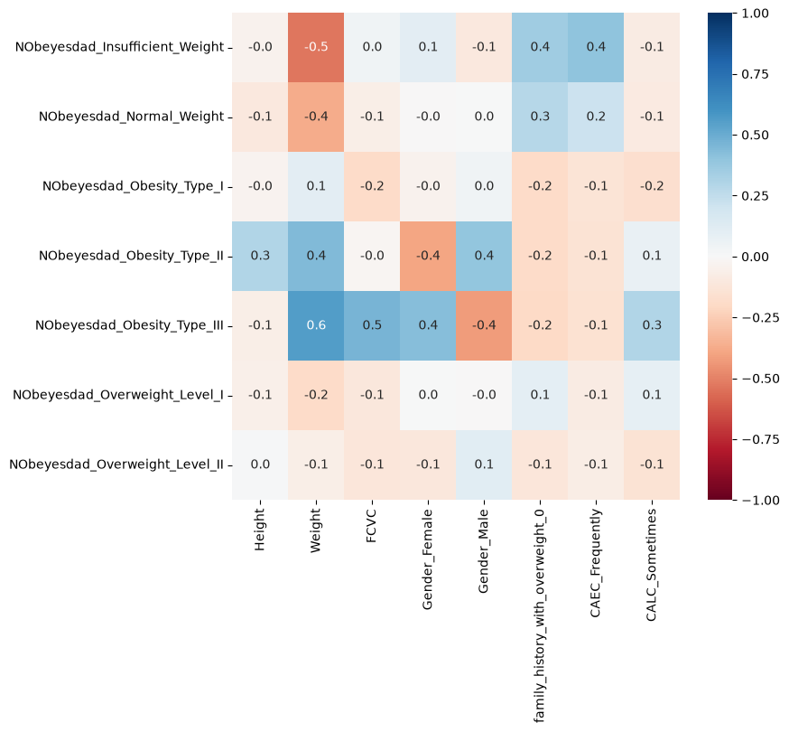
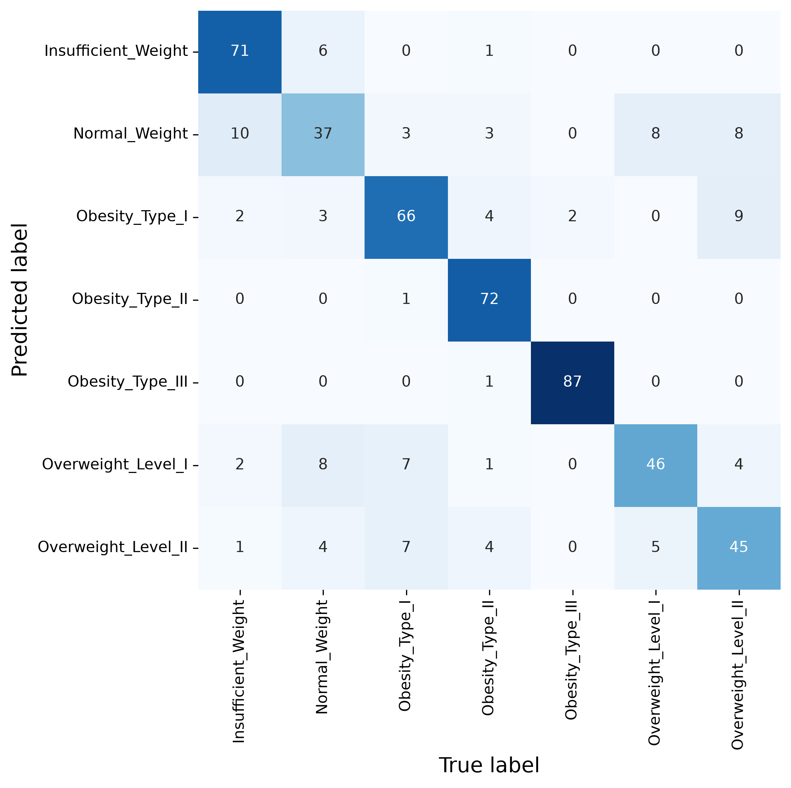
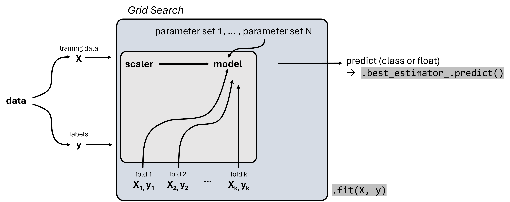
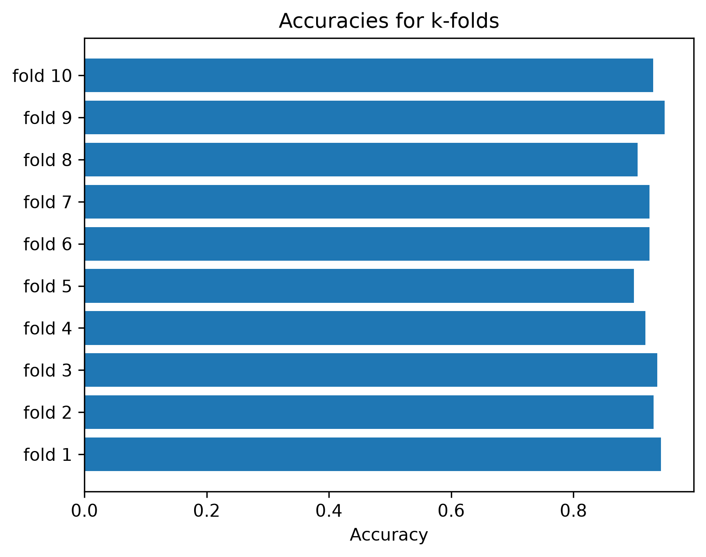

Supervised Machine Learning - Key Techniques#
So far, we’ve explored a range of popular supervised models and seen how Scikit-Learn’s unified API makes it almost effortless to define, train, and deploy them. In fact, most Scikit-Learn workflows boil down to three simple steps:
# 1. Instantiate your model
my_model = ScikitLearnModel(parameter1, parameter2, ...)
# 2. Fit it to your data
my_model.fit(X, y)
# 3. Generate predictions
my_model.predict(X_new)
But real-world success demands much more than knowing these commands! Developing true expertise requires a lot of hands-on experience: be prepared to spend significant time exploring datasets, engineering features, and tuning hyperparameters before you intuitively understand what approaches work and why.
Whether through online tutorials, Kaggle competitions or, ideally, practical projects from your studies, your job, or even self-directed challenges, every experiment builds the depth of insight you need.
Equally important is mastering fundamental concepts in model training and evaluation. Grasping techniques like cross-validation, recognizing and avoiding overfitting or underfitting, selecting the right performance metrics, and properly preprocessing data are all essential to turning code into reliable predictions. In this chapter, we’ll guide you through those critical ideas so that when you next invoke fit() and predict(), you’ll know better what to look for — and how to steer it toward your goals.
Model Evaluation#
Model evaluation is crucial in understanding the performance of machine learning algorithms. Beyond the basic metrics introduced previously like accuracy and confusion matrices, it is very useful to know more about additional metrics to capture different aspects of model performance comprehensively.
First off, there is not a simple general answer to which metric is the best. This largely depends on the type of data, the type of model, and the actual question we want to answer with our model. Let’s take an example of a use case where we want to predict fraudulent phone calls from data such as call duration, call origin, time, etc. This data could easily have many more regular calls than fraudulent calls, let’s assume we have 99,000 non-fraudulent calls and 1,000 fraudulent calls in the data. We call this biased data, and handling this correctly is one of the most common challenges in machine learning.
We now train a machine learning model, say a decision tree, to predict if a phone call is fraudulent or not. What would be a good accuracy for such a model?
If you think about this for a moment (please do!), then you might realize that it is not easy to define what a good accuracy value is. For this reason, you should never only present an accuracy value without context! Always at least ask what would be achievable with little effort and compare to this baseline. In the phone call example, I can easily come up with a toy “model” that will always predict non-fraudulent. What would the accuracy of this toy model be?
The accuracy is the fraction of correct predictions, and if I simply label all calls as non-fraudulent I would be correct in \(99\%\) of the cases. So, my accuracy becomes \(0.99\). Without any context, that might look like a good result, but this baseline example makes clear that a model with such an accuracy value is not at all impressive on the given task.
The confusion matrix we used earlier will do much better here because this will also reveal that our toy model does not discover any of the fraudulent calls (which makes it completely useless for any application…).
Detailed Model Evaluation Metrics (classification)#
Here are a few of the most commonly used metrics to evaluate classification models.
1. Confusion Matrix#
A confusion matrix is an \(N \times N\) matrix used for evaluating the performance of a classification model, where N is the number of target classes. The matrix compares the actual target values with those predicted by the machine learning model, providing insight into the types of errors made by the classifier.
Elements:
True Positives (TP): Correct positive predictions.
False Positives (FP): Incorrectly predicted positives (Type I error).
True Negatives (TN): Correct negative predictions.
False Negatives (FN): Incorrectly predicted negatives (Type II error).
In the fraud detection example, a false negative would be more dangerous and costly than a false positive. A high number of FN means many fraudulent calls are not being detected. Conversely, while FP might cause some inconvenience (e.g., blocking legitimate calls), it is preferable over missing actual frauds.

Fig. 33 The confusion matrix is a good way to quickly display and assess the true positive value (TP), the true negative value (TN) as well as the false positives (FP) and false negatives (FN). Based on those numbers different standard metrics to evaluate a model are computed such as accuracy, recall, specificity, and precision.#
2. Precision and Recall#
Precision and recall are metrics that provide more insight into the accuracy of positive predictions and the classifier’s ability to recover all relevant instances, respectively.
Precision (Positive Predictive Value):
The ratio of correctly predicted positive observations to the total predicted positives.
High precision indicates a low false positive rate, which is crucial in scenarios where the cost of a false positive is high, such as in email spam classification.
Recall (Sensitivity, True Positive Rate):
The ratio of correctly predicted positive observations to all observations in actual class.
High recall is vital in medical scenarios or fraud detection, where failing to detect an anomaly can have severe consequences.
3. F1 Score#
The F1 Score is the weighted average of Precision and Recall. Therefore, this score takes both false positives and false negatives into account. It is particularly useful when the class distribution is uneven (biased data).
The F1 score is an excellent measure to use if you need to seek a balance between Precision and Recall and there is an uneven class distribution (as in the case of your fraudulent vs. non-fraudulent calls scenario).
4. Accuracy#
As previously discussed, accuracy is the ratio of correctly predicted observations to the total observations and can be misleading in the presence of an imbalanced dataset.
Detailed Model Evaluation Metrics (Regression)#
Here are a few of the most commonly used metrics to evaluate regression models.
1. Mean Absolute Error (MAE)#
MAE measures the average magnitude of the errors in a set of predictions, without considering their direction. It’s the average over the test sample of the absolute differences between prediction and actual observation where all individual differences have equal weight.
where \(y_i\) are the actual values and \(\hat{y}_i\) are the predicted values.
2. Mean Squared Error (MSE)#
MSE is like MAE but squares the difference before summing them all instead of using the absolute value. This has the effect of heavily penalizing larger errors.
MSE is more sensitive to outliers than MAE and tends to emphasize larger differences.
There are many more metrics available, such as RMSE or R-squared, but we will not cover them in this course.
In Scikit-Learn all those scores are already implemented:
from sklearn.metrics import accuracy_score, mean_absolute_error, mean_squared_error, confusion_matrix, f1_score
# Assuming y_true and y_pred are available
print("Accuracy:", accuracy_score(y_true, y_pred))
print("MAE:", mean_absolute_error(y_true, y_pred))
print("MSE:", mean_squared_error(y_true, y_pred))
print("Confusion Matrix:\n", confusion_matrix(y_true, y_pred))
print("F1 Score:", f1_score(y_true, y_pred, average='weighted'))
Training and Testing Strategies#
Developing a robust machine learning model involves more than just selecting the right algorithm. Equally crucial are the strategies employed for training and testing the model. These strategies are fundamental to ensuring that the model performs well not just on the data it was trained on, but also on new, unseen data. This section explores various methodologies for dividing your dataset, training your models, and validating their performance to ensure reliability and accuracy in predictions.
Splitting Your Data: Training, Validation, and Test Sets#
1. Train-Test Split The most basic approach to training and testing a machine learning model is to divide your data into two sets: the training set and the test set. The typical ratios are 70% for training and 30% for testing, but these can vary depending on the dataset size.
Purpose: Ensures that the model can be evaluated on unseen data.
Method:
from sklearn.model_selection import train_test_split X_train, X_test, y_train, y_test = train_test_split(X, y, test_size=0.3, random_state=42)
2. Train-Validation-Test Split When tuning hyperparameters or making decisions about model architecture, it’s crucial to have a third split: the validation set.
Purpose: Allows for model tuning without touching the test set, thereby keeping the test set as a truly unseen dataset for final model evaluation.
Implementation Tip: Reserve a part of the training set for validation or use techniques like cross-validation.
Cross-Validation: Enhancing Model Validation#
Cross-validation is a robust method for estimating the effectiveness of your model, which is especially useful when dealing with limited data.
A k-Fold Cross-Validation means that the dataset is divided into ‘k’ smaller sets. The model is trained on ‘k-1’ of these folds, with the remaining part used as the test fold. This process is repeated ‘k’ times, with each of the ‘k’ folds used exactly once as the test set.
Using Scikit-Learn this can be realized like this:
from sklearn.model_selection import cross_val_score, KFold
kf = KFold(n_splits=5, random_state=42, shuffle=True)
scores = cross_val_score(model, X, y, cv=kf)
average_score = scores.mean()
A variation of a k-fold is the stratified K-Fold that is used for highly imbalanced classes. It ensures that each fold of the dataset has the same proportion of examples in each class as the complete set.

Fig. 34 Illustration of a model training workflow using cross-validation to find the best hyperparameters. The displayed workflow also contains an additional first split into train and test set, a common best practice to avoid any form of overfitting. Under certain circumstances, however, it is also possible to skip this split and only work with k-fold cross-validation, in particular for very small datasets.#
Advanced Techniques for Unbalanced Data#
When dealing with imbalanced datasets, traditional training and testing strategies may not suffice, as they might lead to models biased towards the majority class. Common strategies to work with highly imbalanced data are:
Oversampling the Minority Class: Increasing the number of instances in the minority class by duplicating them to prevent the model from being biased toward the majority class.
Undersampling the Majority Class: Reducing the number of instances in the majority class to balance the dataset.
Synthetic Data Generation: Techniques like SMOTE (Synthetic Minority Over-sampling Technique) generate synthetic samples rather than duplicating existing samples to provide more generalization.
Putting It All Together#
Choosing the right training and testing strategies is crucial for building a reliable model. The key is to simulate a real-world scenario as closely as possible, where the model will make predictions on unseen data. By employing robust validation techniques like cross-validation and adjusting training strategies based on the data’s characteristics, such as imbalance, one can significantly enhance model accuracy and reliability.
Implementing these strategies effectively allows for comprehensive assessment and refinement of models, ensuring they perform well across different datasets and hold up to the rigors of real-world application.
Beyond this course:#
Here, we did the sampling, that is the selection of data points, for either training or testing, fully randomly. In many real-world cases, however, the situation can be more complex. For instance, we might have many medical observations in a dataset with sometimes multiple entries for the same patient. In such a case we would have to split the data by patient and not fully randomly (see, for instance, here: [Tougui et al., 2021]). In other cases, we will have strong biases and we would often like to compensate for this. For example, to avoid that -purely by chance- a certain population or class is not well represented in a certain data split. The process to compensate for this is called stratification.
Nice-to-have: Scikit-learn Pipeline#
The scikit-learn Pipeline is an essential tool for encapsulating your entire workflow in machine learning model construction. The purpose of a Pipeline is to assemble several steps that can be cross-validated together while setting different parameters. It helps in maintaining the sequence of transformations and ensuring that all steps in the process are carried out consistently (see Fig. 35). This makes the model building process cleaner, easier to manage, and repeatable.
Key Features:
Automation of Workflow: Pipeline automates the process of applying the same sequence of transformations for fitting and predicting data. For example, scaling data, extracting features, and then training a model.
Ease of Experimentation: By defining a set of steps, Pipelines allow for easy experimentation with different processing or learning steps.
Prevention of Data Leakage: Pipelines help in preventing data leakage by ensuring that data transformations are learned from training data inside the cross-validation loop and applied to the validation data.
Example Usage:
from sklearn.pipeline import Pipeline
from sklearn.preprocessing import StandardScaler
from sklearn.decomposition import PCA
from sklearn.linear_model import LogisticRegression
# Create a pipeline with a scaler, PCA dimensionality reduction, and logistic regression
pipeline = Pipeline([
('scaler', StandardScaler()),
('pca', PCA(n_components=2)),
('logistic_regression', LogisticRegression())
])
# Now the pipeline can be used like a single model
pipeline.fit(X_train, y_train)
predictions = pipeline.predict(X_test)

Fig. 35 In addition to the “normal” workflow to train a model directly (A), the Scikit-Learn Pipeline allows combining multiple processing steps into a Pipline object. This can then be used just like a single model, for instance by running .fit() or .predict().#
Hands-on Example: Obesity prediction#
We will here work with an Obesity Levels Dataset [Palechor and la Hoz Manotas, 2019] which was downloaded from the UCI archive.
This dataset comprises data for predicting obesity levels in individuals from Mexico, Peru, and Colombia, utilizing information about their dietary habits and physical condition. It includes 17 attributes across 2111 records. Each record is categorized under the class variable NObesity (Obesity Level), which facilitates the classification of data into categories such as Insufficient Weight, Normal Weight, Overweight Level I, Overweight Level II, Obesity Type I, Obesity Type II, and Obesity Type III. Only 23% of the data was sourced directly from individuals through a web-based platform. The larger part of the dataset, 77%, was synthetically generated using the Weka software and the SMOTE filter to augment the data diversity.
import os
import pandas as pd
import numpy as np
from matplotlib import pyplot as plt
import seaborn as sb
Data Inspection & Cleaning#
filename = "../datasets/obesity_dataset.csv"
data = pd.read_csv(filename)
data.head()
| Gender | Age | Height | Weight | family_history_with_overweight | FAVC | FCVC | NCP | CAEC | SMOKE | CH2O | SCC | FAF | TUE | CALC | MTRANS | NObeyesdad | |
|---|---|---|---|---|---|---|---|---|---|---|---|---|---|---|---|---|---|
| 0 | Female | 21.0 | 1.62 | 64.0 | yes | no | 2.0 | 3.0 | Sometimes | no | 2.0 | no | 0.0 | 1.0 | no | Public_Transportation | Normal_Weight |
| 1 | Female | 21.0 | 1.52 | 56.0 | yes | no | 3.0 | 3.0 | Sometimes | yes | 3.0 | yes | 3.0 | 0.0 | Sometimes | Public_Transportation | Normal_Weight |
| 2 | Male | 23.0 | 1.80 | 77.0 | yes | no | 2.0 | 3.0 | Sometimes | no | 2.0 | no | 2.0 | 1.0 | Frequently | Public_Transportation | Normal_Weight |
| 3 | Male | 27.0 | 1.80 | 87.0 | no | no | 3.0 | 3.0 | Sometimes | no | 2.0 | no | 2.0 | 0.0 | Frequently | Walking | Overweight_Level_I |
| 4 | Male | 22.0 | 1.78 | 89.8 | no | no | 2.0 | 1.0 | Sometimes | no | 2.0 | no | 0.0 | 0.0 | Sometimes | Public_Transportation | Overweight_Level_II |
Our future labels will be the obesity labels:
data.NObeyesdad.value_counts()
NObeyesdad
Obesity_Type_I 351
Obesity_Type_III 324
Obesity_Type_II 297
Overweight_Level_I 290
Overweight_Level_II 290
Normal_Weight 287
Insufficient_Weight 272
Name: count, dtype: int64
Data Processing#
For training machine learning models, at least many types of them, the data has to be present in numerical from. For models such as decision trees this could in principle be skipped, but let’s convert the data to be sure we can select different models later on.
mask = data.describe(include="all").loc["unique"] == 2
binary_columns = data.columns[mask]
data[binary_columns]
| Gender | family_history_with_overweight | FAVC | SMOKE | SCC | |
|---|---|---|---|---|---|
| 0 | Female | yes | no | no | no |
| 1 | Female | yes | no | yes | yes |
| 2 | Male | yes | no | no | no |
| 3 | Male | no | no | no | no |
| 4 | Male | no | no | no | no |
| ... | ... | ... | ... | ... | ... |
| 2106 | Female | yes | yes | no | no |
| 2107 | Female | yes | yes | no | no |
| 2108 | Female | yes | yes | no | no |
| 2109 | Female | yes | yes | no | no |
| 2110 | Female | yes | yes | no | no |
2111 rows × 5 columns
data[binary_columns] = data[binary_columns].replace({'no': 0, 'yes': 1})
Split Data and Labels#
The column NObeyesdad becomes our label y and will hence be removed from the data X.
y = data.NObeyesdad
X = data.drop(["NObeyesdad"], axis=1)
X = pd.get_dummies(X) #, prefix='', prefix_sep='')
X = X.drop(["Gender_Male"], axis=1) # not necessary, because here it is either Male or Female
X.head()
| Age | Height | Weight | FCVC | NCP | CH2O | FAF | TUE | Gender_Female | family_history_with_overweight_0 | ... | SCC_1 | CALC_Always | CALC_Frequently | CALC_Sometimes | CALC_no | MTRANS_Automobile | MTRANS_Bike | MTRANS_Motorbike | MTRANS_Public_Transportation | MTRANS_Walking | |
|---|---|---|---|---|---|---|---|---|---|---|---|---|---|---|---|---|---|---|---|---|---|
| 0 | 21.0 | 1.62 | 64.0 | 2.0 | 3.0 | 2.0 | 0.0 | 1.0 | True | False | ... | False | False | False | False | True | False | False | False | True | False |
| 1 | 21.0 | 1.52 | 56.0 | 3.0 | 3.0 | 3.0 | 3.0 | 0.0 | True | False | ... | True | False | False | True | False | False | False | False | True | False |
| 2 | 23.0 | 1.80 | 77.0 | 2.0 | 3.0 | 2.0 | 2.0 | 1.0 | False | False | ... | False | False | True | False | False | False | False | False | True | False |
| 3 | 27.0 | 1.80 | 87.0 | 3.0 | 3.0 | 2.0 | 2.0 | 0.0 | False | True | ... | False | False | True | False | False | False | False | False | False | True |
| 4 | 22.0 | 1.78 | 89.8 | 2.0 | 1.0 | 2.0 | 0.0 | 0.0 | False | True | ... | False | False | False | True | False | False | False | False | True | False |
5 rows × 30 columns
X.columns
Index(['Age', 'Height', 'Weight', 'FCVC', 'NCP', 'CH2O', 'FAF', 'TUE',
'Gender_Female', 'family_history_with_overweight_0',
'family_history_with_overweight_1', 'FAVC_0', 'FAVC_1', 'CAEC_Always',
'CAEC_Frequently', 'CAEC_Sometimes', 'CAEC_no', 'SMOKE_0', 'SMOKE_1',
'SCC_0', 'SCC_1', 'CALC_Always', 'CALC_Frequently', 'CALC_Sometimes',
'CALC_no', 'MTRANS_Automobile', 'MTRANS_Bike', 'MTRANS_Motorbike',
'MTRANS_Public_Transportation', 'MTRANS_Walking'],
dtype='str')
Inspect Correlations in the Data#
We could for instance have a look at features that show high correlations (positive OR negative) with one of our labels. This can give a first idea of which features might be relevant for later predictions. This step is optional, though, but it hopefully shows that different data science techniques can be applied in combinations.
<Axes: >

Train/Test split#
As done before, we will do a single split to divide the data into a training set and a test set. We will also apply the alternative, cross-correlation, later in this section.
from sklearn.model_selection import train_test_split
# Train-test split
X_train, X_test, y_train, y_test = train_test_split(X, y, test_size=0.25, random_state=0)
# Let's check the outcome dimensions
X_train.shape, X_test.shape, y_train.shape, y_test.shape
((1583, 30), (528, 30), (1583,), (528,))
Train a k-NN Classifier#
We will here use a k-NN classifier for a first test. As introduced in Common Algorithms - k-Nearest Neighbors (k-NN), this algorithm requires data that is numerical and scaled. The scaling can be seen as part of the model, and we can use Scikit-learn pipelines to combine both steps:
from sklearn.neighbors import KNeighborsClassifier
from sklearn.preprocessing import StandardScaler
from sklearn.pipeline import Pipeline
pipe = Pipeline([
("scale", StandardScaler()),
("model", KNeighborsClassifier(n_neighbors=7)),
])
pipe.fit(X_train, y_train)
Pipeline(steps=[('scale', StandardScaler()),
('model', KNeighborsClassifier(n_neighbors=7))])In a Jupyter environment, please rerun this cell to show the HTML representation or trust the notebook. On GitHub, the HTML representation is unable to render, please try loading this page with nbviewer.org.
Parameters
Fitted attributes
| Name | Type | Value |
|---|---|---|
|
classes_
classes_: ndarray of shape (n_classes,) The classes labels. Only exist if the last step of the pipeline is a classifier. |
ndarray[object](7,) | ['Insufficient_Weight','Normal_Weight','Obesity_Type_I',..., 'Obesity_Type_III','Overweight_Level_I','Overweight_Level_II'] |
|
feature_names_in_
feature_names_in_: ndarray of shape (`n_features_in_`,) Names of features seen during :term:`fit`. Only defined if the underlying estimator exposes such an attribute when fit. .. versionadded:: 1.0 |
ndarray[object](30,) | ['Age','Height','Weight',...,'MTRANS_Motorbike', 'MTRANS_Public_Transportation','MTRANS_Walking'] |
|
n_features_in_
n_features_in_: int Number of features seen during :term:`fit`. Only defined if the underlying first estimator in `steps` exposes such an attribute when fit. .. versionadded:: 0.24 |
int | 30 |
Parameters
Fitted attributes
30 features
| Age |
| Height |
| Weight |
| FCVC |
| NCP |
| CH2O |
| FAF |
| TUE |
| Gender_Female |
| family_history_with_overweight_0 |
| family_history_with_overweight_1 |
| FAVC_0 |
| FAVC_1 |
| CAEC_Always |
| CAEC_Frequently |
| CAEC_Sometimes |
| CAEC_no |
| SMOKE_0 |
| SMOKE_1 |
| SCC_0 |
| SCC_1 |
| CALC_Always |
| CALC_Frequently |
| CALC_Sometimes |
| CALC_no |
| MTRANS_Automobile |
| MTRANS_Bike |
| MTRANS_Motorbike |
| MTRANS_Public_Transportation |
| MTRANS_Walking |
Parameters
Fitted attributes
from sklearn.metrics import confusion_matrix
predictions = pipe.predict(X_test)
Evaluate the Model#
As introduced above, me have the choice between several different metrics to evalute our model. First, we look at accuracy, precision, recall, and f1-score.
Training Metrics:
Accuracy: 0.8358
Precision: 0.8339
Recall: 0.8358
F1 Score: 0.8338
Test Metrics:
Accuracy: 0.8030
Precision: 0.7976
Recall: 0.8030
F1 Score: 0.7981
Instead of computing all of them individually using Scikit-Learn functions, we can also use pre-assembled functions such as classification_report:
from sklearn.metrics import classification_report
print(classification_report(y_test, y_pred_test))
precision recall f1-score support
Insufficient_Weight 0.83 0.91 0.87 78
Normal_Weight 0.64 0.54 0.58 69
Obesity_Type_I 0.79 0.77 0.78 86
Obesity_Type_II 0.84 0.99 0.91 73
Obesity_Type_III 0.98 0.99 0.98 88
Overweight_Level_I 0.78 0.68 0.72 68
Overweight_Level_II 0.68 0.68 0.68 66
accuracy 0.80 528
macro avg 0.79 0.79 0.79 528
weighted avg 0.80 0.80 0.80 528
Confusion matrix#
While those metrics have all their merits, often one of the most informative evaluation approaches for classification problems remains the confusion matrix. This not only gives a sense of the overall performance of a model, but also indicates which classes are often confused and hence seemingly difficult for the model to distinguish.
fig, ax = plt.subplots(figsize=(7, 7), dpi=300)
sb.heatmap(confusion_matrix(y_test, predictions),
annot=True, cmap="Blues", cbar=False, fmt=".0f",
xticklabels=pipe.classes_,
yticklabels=pipe.classes_)
ax.set_xlabel("True label", fontsize=14)
ax.set_ylabel("Predicted label", fontsize=14)
plt.show()

Hyperparameter Search#
Although we used a simple k-NN model here, the results look OK-ish at first sight. But here are some questions for you:
How do we know if this is just OK, or good, or excellent?
How can we improve our model further? And is this even possible?
The answer is not always simple.
To judge whether or not a model is doing very well, we always need to have some references for comparison. In the case we see here -and unlike the fraudulent phone call example in the beginning of this section- it is much harder to come up with a simple toy model here. A random model, for instance, would certainly do much worse.
So it is not all bad but also not making perfect predictions. But is a perfect model even possible? And how can we optimize our model besides manually trying many different variations?
We can start with the model optimization because this is more straightforward. At least for cases like the one at hand, where computation time is no restriction because the model and dataset are relatively small and simple. In such cases it is usually good enough to just run a systematic parameter search.
Systematic Parameter Search#
Finding the optimal set of parameters for machine learning models can dramatically improve their performance. Scikit-learn offers tools like GridSearchCV and RandomizedSearchCV to automate the search for the best hyperparameters.
Grid Search#
GridSearchCV: Performs an exhaustive search over specified parameter values for an estimator. Useful when we are looking for a small number of hyperparameters.
Random Search#
RandomizedSearchCV: Can sample a given number of candidates from a parameter space with a specified distribution. More efficient than GridSearchCV when dealing with a large hyperparameter space or when we aim to reduce the computational burden.
We will here only do a simple grid search using Scikit-Learn’s GridSearchCV. This works with any Scikit-Learn machine learning model, but also with Pipeline objects as displayed in Fig. 36.

Fig. 36 Scikit-Learn’s GridSearchCV combines a grid search for systematically comparing different parameter sets with a cross-validation approach. GridSearchCV objects again follow the Scikit-Learn workflow and can be trained using .fit().#
pipe = Pipeline([
("scale", StandardScaler()),
("model", KNeighborsClassifier()), # we don't have to add any parameter here!
])
from sklearn.model_selection import GridSearchCV
grid = GridSearchCV(estimator=pipe,
param_grid={
"model__n_neighbors": [2, 3, 4, 5, 10, 15, 20]
},
cv=5,
return_train_score=True,
verbose=1, # set to 2 if you want more information during the run
)
grid.fit(X_train, y_train)
Fitting 5 folds for each of 7 candidates, totalling 35 fits
GridSearchCV(cv=5,
estimator=Pipeline(steps=[('scale', StandardScaler()),
('model', KNeighborsClassifier())]),
param_grid={'model__n_neighbors': [2, 3, 4, 5, 10, 15, 20]},
return_train_score=True, verbose=1)In a Jupyter environment, please rerun this cell to show the HTML representation or trust the notebook. On GitHub, the HTML representation is unable to render, please try loading this page with nbviewer.org.
Parameters
Fitted attributes
Parameters
Fitted attributes
30 features
| Age |
| Height |
| Weight |
| FCVC |
| NCP |
| CH2O |
| FAF |
| TUE |
| Gender_Female |
| family_history_with_overweight_0 |
| family_history_with_overweight_1 |
| FAVC_0 |
| FAVC_1 |
| CAEC_Always |
| CAEC_Frequently |
| CAEC_Sometimes |
| CAEC_no |
| SMOKE_0 |
| SMOKE_1 |
| SCC_0 |
| SCC_1 |
| CALC_Always |
| CALC_Frequently |
| CALC_Sometimes |
| CALC_no |
| MTRANS_Automobile |
| MTRANS_Bike |
| MTRANS_Motorbike |
| MTRANS_Public_Transportation |
| MTRANS_Walking |
Parameters
Fitted attributes
After the training run the results for the different parameter settings can be compared.
results = pd.DataFrame(grid.cv_results_)
results.sort_values("rank_test_score").head(3)
| mean_fit_time | std_fit_time | mean_score_time | std_score_time | param_model__n_neighbors | params | split0_test_score | split1_test_score | split2_test_score | split3_test_score | ... | mean_test_score | std_test_score | rank_test_score | split0_train_score | split1_train_score | split2_train_score | split3_train_score | split4_train_score | mean_train_score | std_train_score | |
|---|---|---|---|---|---|---|---|---|---|---|---|---|---|---|---|---|---|---|---|---|---|
| 1 | 0.004671 | 0.000070 | 0.003975 | 0.000031 | 3 | {'model__n_neighbors': 3} | 0.788644 | 0.839117 | 0.753943 | 0.803797 | ... | 0.801024 | 0.028894 | 1 | 0.886256 | 0.883886 | 0.889415 | 0.886346 | 0.891081 | 0.887397 | 0.002545 |
| 0 | 0.004867 | 0.000305 | 0.004021 | 0.000185 | 2 | {'model__n_neighbors': 2} | 0.794953 | 0.826498 | 0.772871 | 0.797468 | ... | 0.798485 | 0.017082 | 2 | 0.909953 | 0.919431 | 0.914692 | 0.906867 | 0.910024 | 0.912193 | 0.004398 |
| 2 | 0.004782 | 0.000106 | 0.004228 | 0.000234 | 4 | {'model__n_neighbors': 4} | 0.769716 | 0.810726 | 0.757098 | 0.784810 | ... | 0.782698 | 0.018358 | 3 | 0.857030 | 0.851501 | 0.870458 | 0.853197 | 0.859511 | 0.858339 | 0.006681 |
3 rows × 21 columns
We can also directly jump to the best performing parameter set:
grid.best_params_
{'model__n_neighbors': 3}
Or, we can have the grid object return the best performing model:
grid.best_estimator_
Pipeline(steps=[('scale', StandardScaler()),
('model', KNeighborsClassifier(n_neighbors=3))])In a Jupyter environment, please rerun this cell to show the HTML representation or trust the notebook. On GitHub, the HTML representation is unable to render, please try loading this page with nbviewer.org.
Parameters
Fitted attributes
| Name | Type | Value |
|---|---|---|
|
classes_
classes_: ndarray of shape (n_classes,) The classes labels. Only exist if the last step of the pipeline is a classifier. |
ndarray[object](7,) | ['Insufficient_Weight','Normal_Weight','Obesity_Type_I',..., 'Obesity_Type_III','Overweight_Level_I','Overweight_Level_II'] |
|
feature_names_in_
feature_names_in_: ndarray of shape (`n_features_in_`,) Names of features seen during :term:`fit`. Only defined if the underlying estimator exposes such an attribute when fit. .. versionadded:: 1.0 |
ndarray[object](30,) | ['Age','Height','Weight',...,'MTRANS_Motorbike', 'MTRANS_Public_Transportation','MTRANS_Walking'] |
|
n_features_in_
n_features_in_: int Number of features seen during :term:`fit`. Only defined if the underlying first estimator in `steps` exposes such an attribute when fit. .. versionadded:: 0.24 |
int | 30 |
Parameters
Fitted attributes
30 features
| Age |
| Height |
| Weight |
| FCVC |
| NCP |
| CH2O |
| FAF |
| TUE |
| Gender_Female |
| family_history_with_overweight_0 |
| family_history_with_overweight_1 |
| FAVC_0 |
| FAVC_1 |
| CAEC_Always |
| CAEC_Frequently |
| CAEC_Sometimes |
| CAEC_no |
| SMOKE_0 |
| SMOKE_1 |
| SCC_0 |
| SCC_1 |
| CALC_Always |
| CALC_Frequently |
| CALC_Sometimes |
| CALC_no |
| MTRANS_Automobile |
| MTRANS_Bike |
| MTRANS_Motorbike |
| MTRANS_Public_Transportation |
| MTRANS_Walking |
Parameters
Fitted attributes
The grid search is usually just meant to find the most suitable parameters. Once we found them, we would train a new model using those settings:
pipe = Pipeline([
("scale", StandardScaler()),
("model", KNeighborsClassifier(n_neighbors=2)),
])
pipe.fit(X_train, y_train)
Pipeline(steps=[('scale', StandardScaler()),
('model', KNeighborsClassifier(n_neighbors=2))])In a Jupyter environment, please rerun this cell to show the HTML representation or trust the notebook. On GitHub, the HTML representation is unable to render, please try loading this page with nbviewer.org.
Parameters
Fitted attributes
| Name | Type | Value |
|---|---|---|
|
classes_
classes_: ndarray of shape (n_classes,) The classes labels. Only exist if the last step of the pipeline is a classifier. |
ndarray[object](7,) | ['Insufficient_Weight','Normal_Weight','Obesity_Type_I',..., 'Obesity_Type_III','Overweight_Level_I','Overweight_Level_II'] |
|
feature_names_in_
feature_names_in_: ndarray of shape (`n_features_in_`,) Names of features seen during :term:`fit`. Only defined if the underlying estimator exposes such an attribute when fit. .. versionadded:: 1.0 |
ndarray[object](30,) | ['Age','Height','Weight',...,'MTRANS_Motorbike', 'MTRANS_Public_Transportation','MTRANS_Walking'] |
|
n_features_in_
n_features_in_: int Number of features seen during :term:`fit`. Only defined if the underlying first estimator in `steps` exposes such an attribute when fit. .. versionadded:: 0.24 |
int | 30 |
Parameters
Fitted attributes
30 features
| Age |
| Height |
| Weight |
| FCVC |
| NCP |
| CH2O |
| FAF |
| TUE |
| Gender_Female |
| family_history_with_overweight_0 |
| family_history_with_overweight_1 |
| FAVC_0 |
| FAVC_1 |
| CAEC_Always |
| CAEC_Frequently |
| CAEC_Sometimes |
| CAEC_no |
| SMOKE_0 |
| SMOKE_1 |
| SCC_0 |
| SCC_1 |
| CALC_Always |
| CALC_Frequently |
| CALC_Sometimes |
| CALC_no |
| MTRANS_Automobile |
| MTRANS_Bike |
| MTRANS_Motorbike |
| MTRANS_Public_Transportation |
| MTRANS_Walking |
Parameters
Fitted attributes
In the case of our k-NN model, this might not improve things much though…
Test Metrics:
Accuracy: 0.8295
Precision: 0.8325
Recall: 0.8295
F1 Score: 0.8284
Train a Decision Tree model instead#
from sklearn.tree import DecisionTreeClassifier
tree = DecisionTreeClassifier(max_depth=3, random_state=0)
tree.fit(X_train, y_train)
DecisionTreeClassifier(max_depth=3, random_state=0)In a Jupyter environment, please rerun this cell to show the HTML representation or trust the notebook.
On GitHub, the HTML representation is unable to render, please try loading this page with nbviewer.org.
Parameters
Fitted attributes
Test Metrics:
Accuracy: 0.6515
Precision: 0.7000
Recall: 0.6515
F1 Score: 0.6502
This is very poor. But this could easily be our bad choice of parameters. So let’s again use a grid search here.
from sklearn.model_selection import GridSearchCV
tree = DecisionTreeClassifier()
grid = GridSearchCV(estimator=tree,
param_grid={
"max_depth": [5, 8, 10, 15, 20],
"min_samples_split": [2, 5, 10]
},
cv=3,
return_train_score=True,
verbose=1, # set to 2 if you want more information during the run
)
grid.fit(X_train, y_train)
Fitting 3 folds for each of 15 candidates, totalling 45 fits
GridSearchCV(cv=3, estimator=DecisionTreeClassifier(),
param_grid={'max_depth': [5, 8, 10, 15, 20],
'min_samples_split': [2, 5, 10]},
return_train_score=True, verbose=1)In a Jupyter environment, please rerun this cell to show the HTML representation or trust the notebook. On GitHub, the HTML representation is unable to render, please try loading this page with nbviewer.org.
Parameters
Fitted attributes
DecisionTreeClassifier(max_depth=15)
Parameters
Fitted attributes
results = pd.DataFrame(grid.cv_results_)
results.sort_values("rank_test_score").head(3)
| mean_fit_time | std_fit_time | mean_score_time | std_score_time | param_max_depth | param_min_samples_split | params | split0_test_score | split1_test_score | split2_test_score | mean_test_score | std_test_score | rank_test_score | split0_train_score | split1_train_score | split2_train_score | mean_train_score | std_train_score | |
|---|---|---|---|---|---|---|---|---|---|---|---|---|---|---|---|---|---|---|
| 9 | 0.007090 | 0.000089 | 0.002010 | 0.000020 | 15 | 2 | {'max_depth': 15, 'min_samples_split': 2} | 0.907197 | 0.907197 | 0.946869 | 0.920421 | 0.018702 | 1 | 1.000000 | 1.000000 | 1.000000 | 1.000000 | 0.000000 |
| 6 | 0.006869 | 0.000015 | 0.001961 | 0.000031 | 10 | 2 | {'max_depth': 10, 'min_samples_split': 2} | 0.909091 | 0.903409 | 0.941176 | 0.917892 | 0.016627 | 2 | 0.990521 | 0.994313 | 0.997159 | 0.993998 | 0.002719 |
| 10 | 0.006968 | 0.000058 | 0.001957 | 0.000030 | 15 | 5 | {'max_depth': 15, 'min_samples_split': 5} | 0.912879 | 0.897727 | 0.937381 | 0.915996 | 0.016338 | 3 | 0.989573 | 0.985782 | 0.987689 | 0.987682 | 0.001548 |
Cross validation#
We would now do the same as before: train a new model with the best parameters. Here, however, we will now do another cross-validation run to illustrate what this does!
See also Scikit-Learn documentation for more information.
The data will be split 10 times into training and test set. For each split a model will be trained and evaluated.
from sklearn.model_selection import cross_validate
k_folds = 10
tree = DecisionTreeClassifier(max_depth=20, random_state=0)
scores = cross_validate(tree, X_train, y_train, cv=k_folds, scoring=["accuracy", "f1_macro"])
scores
{'fit_time': array([0.01031709, 0.00884414, 0.0093348 , 0.00917959, 0.00953269,
0.00908089, 0.00913954, 0.00974727, 0.00941896, 0.00892997]),
'score_time': array([0.0042038 , 0.0037694 , 0.00380731, 0.0037396 , 0.0038619 ,
0.00369143, 0.00382447, 0.00389886, 0.00365567, 0.00367618]),
'test_accuracy': array([0.94339623, 0.93081761, 0.93710692, 0.91772152, 0.89873418,
0.92405063, 0.92405063, 0.90506329, 0.94936709, 0.93037975]),
'test_f1_macro': array([0.93997462, 0.93043011, 0.93587503, 0.9171811 , 0.89191806,
0.92083117, 0.92229085, 0.90794888, 0.94817538, 0.92902221])}
As we see, the cross_validate function collected the test accuracy and f1-values, because that is the metric we specified under scoring. For each metric, 10 values are collected, one for every split of the data. To get an overall estimate, we can simply take the mean value. In addition, however, we also get an impression of how much variation we have in model performances between the different splits!
Careful: the cross_validate function will split the data without shuffling, so if there is any order in the data (or the labels), we need to make sure that shuffling happens beforehand.
_, ax = plt.subplots(dpi=300)
ax.barh(
[f"fold {x}" for x in range(1, k_folds+1)],
scores["test_accuracy"]
)
ax.set_title("Accuracies for k-folds")
ax.set_xlabel("Accuracy")
plt.show()

As we can see, the accuracy does depend on the actual split of the data. This effect is particularly strong in small or very heterogeneous datasets where.